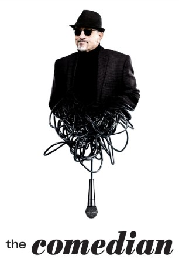
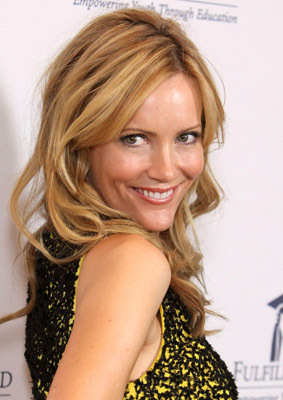
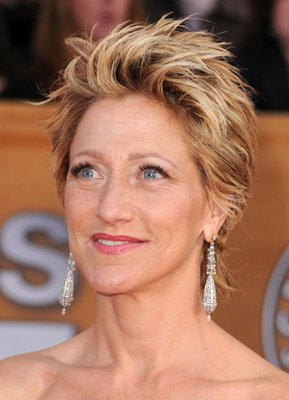
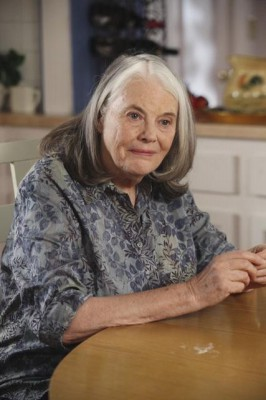
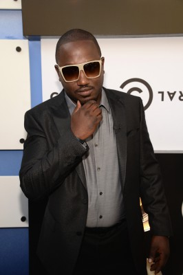
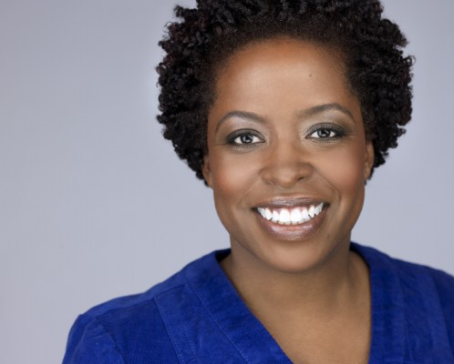

#8458 The Comedian - Wer zuletzt lacht
Alternativ: The Comedian
 
 IMDB-Wertung: 5.8 / 10
IMDB-Wertung: 5.8 / 10  Metascore: 0
Metascore: 0 
Jackie war ein erfolgreicher Comedian, der einen Sitcom-Hit hatte, doch seit dem Ende seiner TV-Serie läuft es für ihn nicht mehr rund. Nun ist er zurück in seiner alten Heimat, wo die Tochter seines Bruders heiraten wird. Weil die tollen Jobangebote ausbleiben, kann ihm seine Agentin nur Stand-Up-Gigs mit anderen alten Recken vermitteln. Weil es bei einem der Gigs eine kleine Auseinandersetzung gibt, muss Jackie schließlich Sozialstunden in einem Obdachlosenheim ableisten. Dort trifft er auf Harmony und verliebt sich. Gemeinsam mit ihr streift der Komiker mit der scharfen Zunge und einem Faible für Beleidigungen durch New York – zu Auftritten von Kollegen, einem Gig in einem Altersheim, der Hochzeit seiner Nichte oder auch dem Geburtstag von Harmonys kontrollsüchtigem Vater Mac Und überall zerbricht er mit seinen Worten reichlich Porzellan…
Jahr: 2016
Dauer: 120 Minuten
FSK: 12
Land: USA Studio: Sony Pictures ClassicsTonspuren: DTS - ,
Untertitel:
Auflösung: 1080p (1920x1080) Größe: 14540 MB
Genre: Komödie
Regisseur:  Taylor Hackford
Taylor Hackford
Drehbuch: Art Linson
Soundtrack: Terence Blanchard
Darsteller:
 Robert De Niro als Jackie Burke
Robert De Niro als Jackie Burke-  Leslie Mann als Harmony Schiltz
 Harvey Keitel als Mac Schiltz
Harvey Keitel als Mac Schiltz-  Edie Falco als Miller
 Danny DeVito als James Berkowitz
Danny DeVito als James Berkowitz Patti LuPone als Florie Berkowitz
Patti LuPone als Florie Berkowitz Charles Grodin als Dick D'Angelo
Charles Grodin als Dick D'Angelo Cloris Leachman als May Connor
Cloris Leachman als May Connor- Lucy DeVito als Brittany Berkowitz
 Billy Crystal als Billy Crystal
Billy Crystal als Billy Crystal Veronica Ferres als Karola
Veronica Ferres als Karola-  Lois Smith als Miriam
 Marylouise Burke als Adele
Marylouise Burke als Adele- Stewart Steinberg als Bernie
- Brett Butler als Brett Butler
- Ben Hammer als Benjamin
- Jim Norton als Jim Norton
- Jimmie Walker als Jimmie Walker
 Richard Belzer als Richard Belzer
Richard Belzer als Richard Belzer- Freddie Roman als Freddie Roman
- Gilbert Gottfried als Gilbert Gottfried
- Greer Barnes als Greer Barnes
-  Hannibal Buress als Hannibal Buress
- Bill Boggs als Bill Boggs
- Sheng Wang als Sheng Wang
- Ryan Hamilton als Ryan Hamilton
- Aida Rodriguez als Aida Rodriguez
- Dov Davidoff als Dov Davidoff
- Nick Di Paolo als Nick Di Paolo
- Karin Collison als Middle Aged Woman
 Susan Blackwell als Arlene
Susan Blackwell als Arlene- Stephen Sayegh als Eddie, Jr.
- Jenson Smith als Bachelorette #1
- Connie Saltzman als Bachelorette #2
 Happy Anderson als Heckler
Happy Anderson als Heckler- Rebecca Kling als Heckler's Girlfriend
- Geoff Schuppert als Jackie's Attorney
-  Gameela Wright als Judge Mansfield
- Rasik Ohal als District Attorney
- Alexis Suarez als Court Clerk
- Patrick Murney als Prison Guard
- Renée Willett als Ashley
- Beth Malone als Carol Bock
 Craig Castaldo als Soup Kitchen Patron #1
Craig Castaldo als Soup Kitchen Patron #1- Neil J. Letendre als Wedding Band
- Kelly McCrann als Frankie
- Lawrence Smith als Mac's Bodyguard
- Lyman Chen als Chinese Waiter
- Mark Axelowitz als Friar's Bartender
- Olivia Washington als May's Assistant
Datei: X:\2016(A-F)\Comedian - Wer zuletzt lacht, The (2016, FSK12, 1920x1080).mkv seit 06.03.2018
Festplatte: HD 2016(A-Z)
 Es gibt insgesamt 147 Filme in der Gruppe '2016(A-F)'
Es gibt insgesamt 147 Filme in der Gruppe '2016(A-F)'